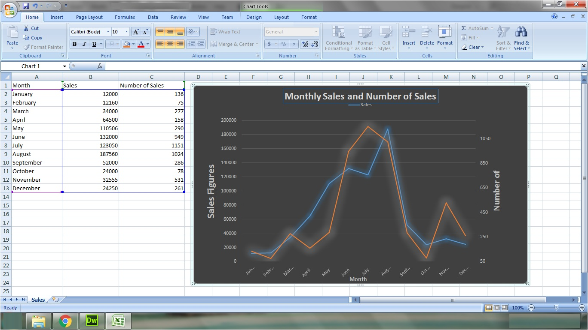
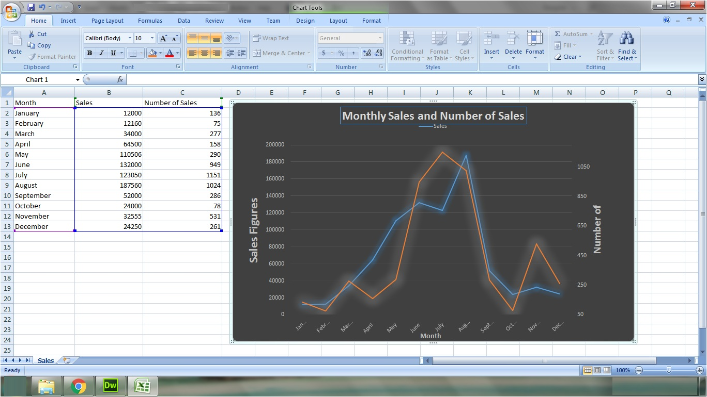

ICT tools for managing information overload
There are various tools which can be used for making decision making simpler! Few such tools are, data mining tools, spreadsheet softwares and simulation softwares.


 
